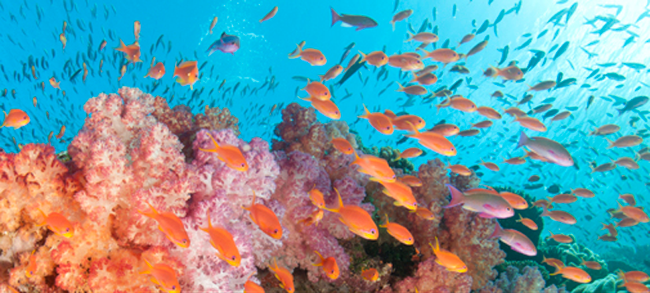

What we do
Ocean Conservancy History
We’ve worked with you to fight for a healthy ocean since 1972—thank you for four decades of support.

In 1972, Ocean Conservancy began as a small organization with a simple purpose: to fight for a healthy ocean.
Over the next four decades, our supporters helped us stay at the forefront of this issue as we developed concrete solutions that ensure a healthy ocean for generations to come. With each victory, you’ve helped us use science to inform our work with partners as diverse as our supporters — from fishing communities to major businesses.
Over the years, you've helped us:
- Lay the groundwork for an international moratorium on commercial whaling.
- Play an instrumental role in protecting fur seals from over-hunting and banning the international trade of sea turtles.
- Create national marine sanctuaries and serve as the lead non-governmental organization in the designation of 10 of the 13 marine sanctuaries.
- Address the need for better fisheries management and reduce the effects of bycatch.
But the increasing risks to ocean health make our work today more important than ever.
When the explosion of BP's Deepwater Horizon rig in 2010 produced the largest accidental marine oil spill in history, we capitalized on our two decades of experience in the region to take a leading role in the assessment and restoration of damage.
With your support, our work in the Gulf continues today with efforts to advocate for science-based restoration plans that ensure this environmentally and economically important region's full recovery become a reality.
Since 1986, the International Coastal Cleanup has been one of the hallmarks of our work, growing from 12 sites along the Texas coast to more than 6,000 sites in more than 100 countries. With the help of the more than 9 million volunteers, we’ve been able to remove over 145 million pounds of debris in just under three decades.
But there's still significant work to be done.
Every day, we need to engage a wide range of competing ocean interests to ensure balanced, sustainable use of the ocean's resources, restore important habitats and help existing ecosystems adapt to a changing environment if we hope to protect the planet's valuable marine resources in the decades to come.
Join us in the fight for a healthy ocean and to stop the damage we see every day. By becoming part of this movement, you help us live out our shared vision: Be counted among the people who understand that we're not healthy without a healthy ocean.